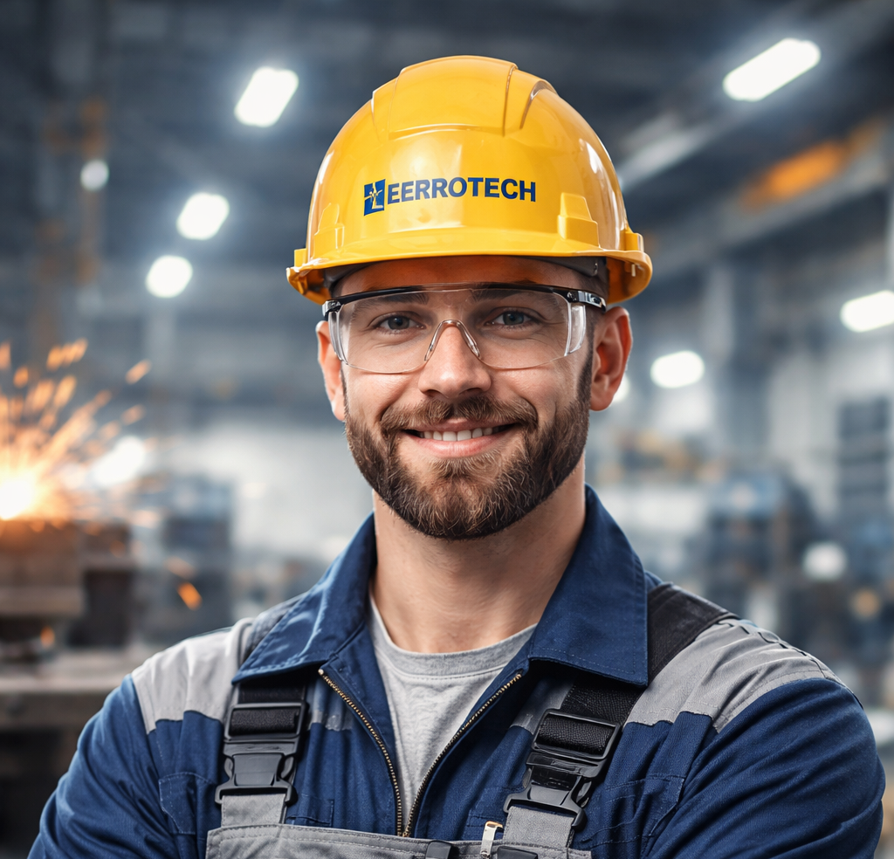
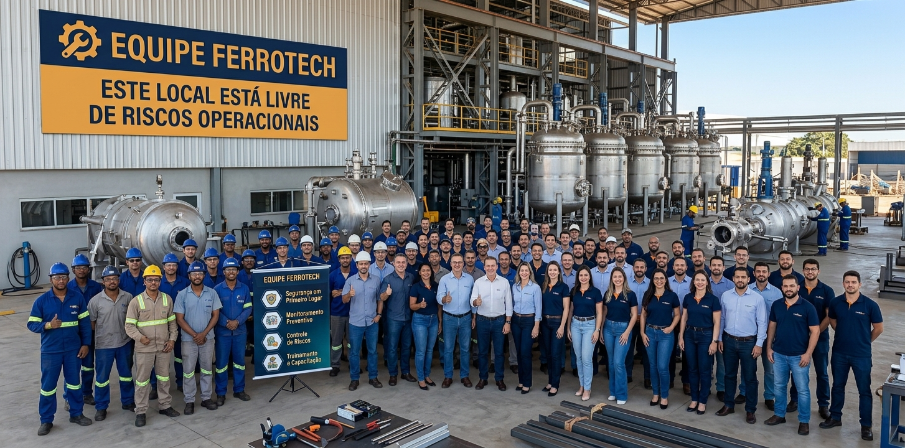

Especialistas em Corte a Laser, Usinagem CNC e Soldagem de alta performance. Entregamos a peça exata que o seu projeto exige, com tolerância zero ao erro.
Nossas boas práticas para uma metalurgia responsável e ética.
Empoderamos nossos profissionais no presente para forjar o futuro. Valorizamos a expertise técnica e a dedicação de cada colaborador, criando um ambiente seguro, diverso e focado em inovação constante.
Você quer moldar o futuro conosco?

Precisão milimétrica em chapas de aço carbono e inox com tecnologia de fibra ótica.
Especificações TécnicasPeças complexas com tolerâncias rigorosas para os setores automotivo e aeroespacial.
Ver MaquinárioSolda MIG/TIG robotizada garantindo integridade estrutural em grandes montagens.
Certificações de Qualidade